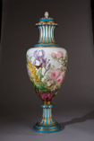

|  | 作品名稱 | 「萬國博覽會」花卉大瓶 巴黎彩繪工房 A Paris Porcelain Ormolu-Mounted Large “Exposition” Vase And Cover Last Quarter 19th Century |
| 作者 | ||
| 年代 | c.1878 | |
| 尺寸 | 94 cm | |
| 作品說明 | 這件是老巴黎彩繪工房作品，帶有強烈的賽弗爾瓷窯風格，曾在1878年巴黎萬國博覽會參展。畫師是P. Hartwig，畫風寫實，釉色柔美，羽色鮮豔的蝴蝶穿插在花叢之中，顯得格外的生動。此畫師的用色技巧與彩繪功力，不亞於賽弗爾瓷窯的御用畫師。 可以看出日本色繪陶瓷的題材受到中國影響，成為東洋陶瓷的一大特色。 |